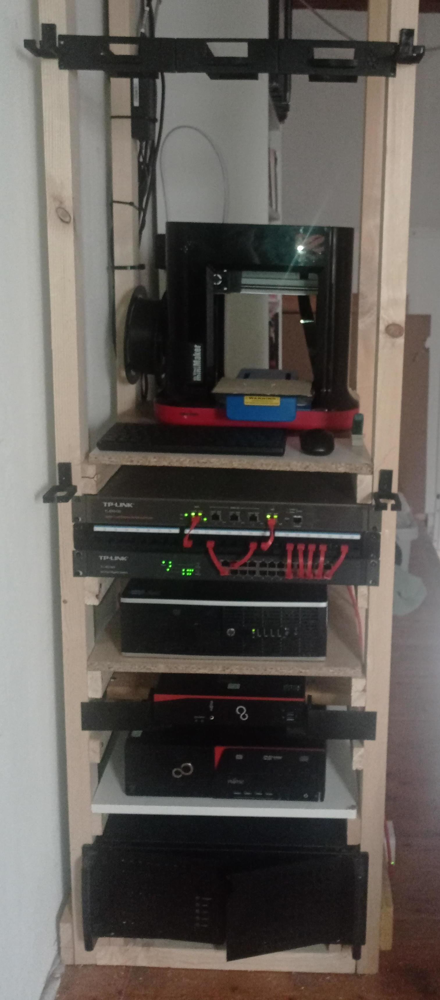

BytesOfProgress
HomeLab Update
15th March 2024 / 06:00 PM
I recognized that I started this website almost 1.5 years ago, but never showed my homelab. I made quite some progress, and decided, that I want to show its current state.
This is what my wooden 19-inch rack currently looks like:
I recently ditched my DIY pfSense router in favor of a TP-Link TL-ER5120 Router. I still use the Raspberry Pi WiFi AP to access my network via WiFi. The thinclient I used as the pfSense router is now my webserver.
I also integrated my 3D-Printer (XYZprinting Da Vinci miniMaker) into the rack.
The computer in the bottom of the rack is my current system I use for gaming. Nothing special in there.
I am currently planning to rackmount multiple Raspberry Pi's with a 3D-printed rackmount you can see at the top.
I do not know how to power them without wasting 3 power outlets yet... We'll see.
I'm also planning on mounting a screen to the top of the rack, to always be able to directly access any system in my rack. That is also the reason for the keyboard and mouse you can see on the picture.
The computer directly under the ethernet-switch (TP-Link TL-SG1024) is currently used as a dedicated minecraft server with crafty.
I still use the Fujitsu Esprimo E920 SFF as my Proxmox host. It is hosting a few things like pihole, filebrowser, apache guacamole, etc.
back